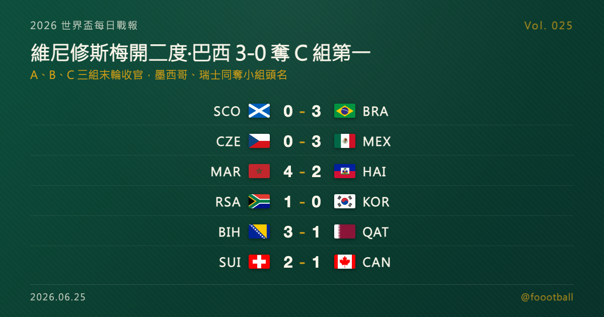

維尼修斯梅開二度，巴西 3-0 完封蘇格蘭奪 C 組首名；A、B、C 三組末輪同日落幕
2026 世界盃 A、B、C 三組末輪同日收官。在邁阿密，維尼修斯梅開二度（7'、45+3'）、馬特烏斯·庫尼亞再添一城，安切洛蒂的巴西 3-0 完封蘇格蘭，以三戰僅失 1 球之姿奪下 C 組頭名晉級；墨西哥在阿茲特克 3-0 完勝捷克、三戰全勝收下 A 組第一，南非則隊史首度確定闖進世界盃淘汰賽。瑞士 2-1 力克地主加拿大奪 B 組第一，摩洛哥在一場 4-2 進球大戰中逆轉海地。維尼修斯本屆已進 4 球，升上金靴榜並列第二。

2026 世界盃每日戰報 Vol. 025｜小組賽｜A／B／C 三組末輪賽果
§1 即時比分戰報
2026 世界盃小組賽進入 A、B、C 三組的末輪，六場比賽同日落幕、各組名次全數底定。最受矚目的一戰在邁阿密 Hard Rock 球場——維尼修斯（Vinícius Júnior）上半場獨進兩球（7'、45+3'），搭配馬特烏斯·庫尼亞的進球，安切洛蒂（Carlo Ancelotti）執掌的巴西 3-0 完封蘇格蘭，三戰僅失 1 球、以 C 組頭名晉級。同組的摩洛哥則在亞特蘭大踢出一場 4-2 進球大戰，從落後中逆轉海地。A 組墨西哥在主場阿茲特克 3-0 完勝捷克、以全勝之姿奪冠，南非則以一球小勝南韓、寫下隊史新頁。B 組瑞士 2-1 撐過地主加拿大的反撲奪下小組第一。以下是本輪六場賽果：
| 賽事 | 比分 | 場館 | 焦點 |
|---|---|---|---|
| 🏴 蘇格蘭 — 🇧🇷 巴西 | 0 - 3 | 邁阿密 Hard Rock Stadium | 維尼修斯 7'＋45+3'（梅開二度）、馬特烏斯·庫尼亞 60'；巴西 C 組第一晉級 |
| 🇨🇿 捷克 — 🇲🇽 墨西哥 | 0 - 3 | 墨西哥城 Estadio Azteca | 查維斯 55'、基尼奧內斯 61'、菲達爾戈 90+4'；墨西哥 A 組全勝奪冠 |
| 🇲🇦 摩洛哥 — 🇭🇹 海地 | 4 - 2 | 亞特蘭大 Mercedes-Benz Stadium | 哈基米 39'、賽巴里 46'、拉希米 78'、加西姆·亞辛 89'；海地兩度領先仍遭逆轉 |
| 🇿🇦 南非 — 🇰🇷 南韓 | 1 - 0 | 蒙特雷 Estadio BBVA | 馬塞科 63' 一擊定勝；南非隊史首度晉級淘汰賽 |
| 🇧🇦 波赫 — 🇶🇦 卡達 | 3 - 1 | 西雅圖 Lumen Field | 阿萊比戈維奇 29'（18 歲）、馬赫米奇 80'；波赫拿下隊史世界盃首勝 |
| 🇨🇭 瑞士 — 🇨🇦 加拿大 | 2 - 1 | 溫哥華 BC Place | 巴爾加斯 46'、曼贊比 57'；地主加拿大落敗仍以 B 組第二出線 |
六場分屬 A、B、C 三組末輪。三組頭名各由墨西哥、瑞士、巴西收下，南非、加拿大、摩洛哥分居各組第二、確定晉級淘汰賽；波赫、南韓、蘇格蘭三支小組第三能否擠進「8 個最佳第三名」，仍要等其餘小組打完才見分曉。§2 是三組最終排名，§4 與同步發佈的特刊則聚焦今晚最大的主角——重回安切洛蒂麾下、狀態火燙的維尼修斯。
§2 排行榜區：A／B／C 三組末輪收官
本屆晉級規則：12 個小組、每組前兩名加上 8 個最佳第三名，共 32 隊晉級淘汰賽。A、B、C 三組已全部踢完，各組前兩名確定晉級，第三名則暫列最佳第三名的競爭、須待其餘小組收官才能定生死。
A 組（末輪打完）——墨西哥三戰全勝、一球未失，以 9 分高居榜首；南非靠末輪小勝南韓、以 4 分搶下第二，寫下隊史首度晉級世界盃淘汰賽；南韓 3 分、捷克 1 分分居三、四：
| # | 球隊 | 賽 | 勝 | 和 | 負 | 進 | 失 | 差 | 分 |
|---|---|---|---|---|---|---|---|---|---|
| 1 | 🇲🇽 墨西哥 | 3 | 3 | 0 | 0 | 6 | 0 | +6 | 9 |
| 2 | 🇿🇦 南非 | 3 | 1 | 1 | 1 | 2 | 3 | -1 | 4 |
| 3 | 🇰🇷 南韓 | 3 | 1 | 0 | 2 | 2 | 3 | -1 | 3 |
| 4 | 🇨🇿 捷克 | 3 | 0 | 1 | 2 | 2 | 6 | -4 | 1 |
B 組（末輪打完）——瑞士兩勝一和、7 分奪冠；地主加拿大雖在末輪 1-2 不敵瑞士，仍以 4 分、淨勝球 +5 力壓波赫，搶下小組第二；波赫同積 4 分但淨勝球居劣勢，排名第三：
| # | 球隊 | 賽 | 勝 | 和 | 負 | 進 | 失 | 差 | 分 |
|---|---|---|---|---|---|---|---|---|---|
| 1 | 🇨🇭 瑞士 | 3 | 2 | 1 | 0 | 7 | 3 | +4 | 7 |
| 2 | 🇨🇦 加拿大 | 3 | 1 | 1 | 1 | 8 | 3 | +5 | 4 |
| 3 | 🇧🇦 波赫 | 3 | 1 | 1 | 1 | 5 | 6 | -1 | 4 |
| 4 | 🇶🇦 卡達 | 3 | 0 | 1 | 2 | 2 | 10 | -8 | 1 |
C 組（末輪打完）——巴西與摩洛哥同積 7 分，因首輪兩隊 1-1 言和，改比淨勝球：巴西 +6 力壓摩洛哥 +3，奪下小組第一；蘇格蘭首戰雖擊敗海地，後兩戰連敗、以 3 分排名第三；海地三戰全敗墊底：
| # | 球隊 | 賽 | 勝 | 和 | 負 | 進 | 失 | 差 | 分 |
|---|---|---|---|---|---|---|---|---|---|
| 1 | 🇧🇷 巴西 | 3 | 2 | 1 | 0 | 7 | 1 | +6 | 7 |
| 2 | 🇲🇦 摩洛哥 | 3 | 2 | 1 | 0 | 6 | 3 | +3 | 7 |
| 3 | 🏴 蘇格蘭 | 3 | 1 | 0 | 2 | 1 | 4 | -3 | 3 |
| 4 | 🇭🇹 海地 | 3 | 0 | 0 | 3 | 2 | 8 | -6 | 0 |
三組第三名中，波赫以 4 分、淨勝球 -1 位置最佳，南韓（3 分、-1）與蘇格蘭（3 分、-3）則相對被動。最終誰能搭上最佳第三名的末班車，要待 D 至 L 各組末輪全部結束才能拍板。
§3 賽事摘要
- 蘇格蘭 0-3 巴西：本日焦點，也是巴西本屆最具說服力的一場演出。維尼修斯第 7 分鐘便首開紀錄，上半場補時（45+3'）再以一記頭球梅開二度——這也是他國家隊生涯的第一顆頭球，巴西半場前已 2-0 領先；下半場馬特烏斯·庫尼亞（Matheus Cunha）第 60 分鐘鎖定勝局。巴西三戰 2 勝 1 和、僅失 1 球，以 C 組頭名晉級；維尼修斯本屆累計進球來到 4 球，並列金靴榜第二。蘇格蘭則在首戰擊敗海地後連吞摩洛哥、巴西兩場敗仗，3 分排名小組第三，晉級前景轉趨黯淡。維尼修斯的狀態與這支安切洛蒂巴西的成色，詳見 §4 與同步發佈的特刊。
- 捷克 0-3 墨西哥：地主之一的墨西哥在阿茲特克球場交出完美收官。查維斯（Mateo Chávez）第 55 分鐘打破僵局，基尼奧內斯（Julián Quiñones）第 61 分鐘擴大比分，菲達爾戈（Álvaro Fidalgo）補時第 90+4 分鐘再入一城。墨西哥三戰全勝、一球未失，以 A 組第一強勢晉級；據報導，17 歲的莫拉（Gilberto Mora）本場先發，刷新墨西哥隊史世界盃最年輕先發紀錄。捷克則三戰僅得 1 分，小組墊底出局。
- 摩洛哥 4-2 海地：全日最瘋狂的一場。摩洛哥門將布努（Yassine Bounou）開賽第 10 分鐘自擺烏龍、讓海地意外取得領先；哈基米（Achraf Hakimi）第 39 分鐘扳平，海地的伊西多（Wilson Isidor）第 43 分鐘再度超前，海地上半場兩度領先。下半場摩洛哥火力全開：賽巴里（Ismael Saibari）第 46 分鐘追平、拉希米（Soufiane Rahimi）第 78 分鐘反超、加西姆·亞辛（Gessime Yassine）第 89 分鐘鎖定 4-2。阿特拉斯雄獅以 7 分、C 組第二完成逆轉晉級。
- 南非 1-0 南韓：一球定江山的關鍵戰。馬塞科（Thapelo Maseko）第 63 分鐘把握機會破門，替南非拿下寶貴的 3 分，以小組第二、隊史首度確定闖進世界盃淘汰賽（2010 年本土辦賽時止步小組賽）。南韓則 3 分排名小組第三，能否晉級要看其他小組臉色。
- 波赫 3-1 卡達：18 歲的阿萊比戈維奇（Kerim Alajbegović）第 29 分鐘進球、刷新波赫世界盃最年輕進球者紀錄，馬赫米奇（Ermin Mahmić）第 80 分鐘再添一球，中間卡達靠對手烏龍與哈伊多斯（Hasan Al-Haydos）第 42 分鐘的進球一度追近。波赫拿下隊史世界盃首勝、以 4 分排名小組第三，搶占最佳第三名的有利身位。
- 瑞士 2-1 加拿大：地主加拿大此役在溫哥華未能守住不敗。瑞士下半場由巴爾加斯（Ruben Vargas）第 46 分鐘、曼贊比（Johan Manzambi）第 57 分鐘接連破門；加拿大替補大衛（Promise David）第 76 分鐘甫上場即扳回一城，但已無力回天。瑞士 7 分奪 B 組第一，加拿大雖落敗仍以 4 分、漂亮的淨勝球壓過波赫，搶下小組第二晉級。
§4 焦點觀察｜重回安切洛蒂麾下，維尼修斯把巴西帶上了正軌
巴西這屆世界盃的最大問號，從來不是天賦，而是天賦能否被收進一套紀律裡。今晚對蘇格蘭的 3-0，給出了一個漂亮的答案。
在邁阿密，維尼修斯上半場獨進兩球（7'、45+3'），梅開二度領銜巴西完封蘇格蘭、以 C 組頭名晉級。這位皇家馬德里的當家球星，本屆累計進球來到 4 球，與哈蘭德、姆巴佩並列金靴榜第二、僅落後梅西一球。更值得一提的是球隊整體：巴西小組三戰僅失 1 球，維尼修斯、拉菲尼亞、馬特烏斯·庫尼亞輪流破門，攻守兩端都看得到章法。
這支巴西由義大利名帥安切洛蒂執教——他是巴西男足百年來首位帶隊征戰世界盃的外籍主帥，也正是維尼修斯在皇馬時期的恩師。師徒重逢後，外界最關心的就是安帥能否像在伯納烏那樣，把維尼修斯的爆發力導進一支有組織的球隊裡。小組賽的答案偏向肯定，但真正的考驗還在後頭。
完整評析請見同步發佈的特刊《從伯納烏到世界盃：安切洛蒂與維尼修斯，能否把巴西重新帶回王座？》——我們會拆解這支「務實森巴」的進化、維尼修斯的數據與爭議，以及巴西進入淘汰賽後將面對的真正難題。 👉 https://foootball.twtools.cc/articles/worldcup-special-2026-06-25-vinicius/
§5 接下來看點
A、B、C 三組收官後，戰線立刻轉到 D、E、F 三組的末輪。E 組的厄瓜多將對上奪冠熱門之一的德國，庫拉索與象牙海岸同步開打，兩場結果將決定 E 組的晉級與排序；F 組則有日本對瑞典、突尼西亞對荷蘭兩場硬仗，亞洲球迷關注的日本能否帶著好成績挺進淘汰賽，今晚見真章——值得一提的是，已晉級的巴西身為 C 組頭名，淘汰賽首輪將對上 F 組第二名，今晚這兩場 F 組對決也將間接決定巴西的 32 強對手；D 組方面，地主美國對土耳其、巴拉圭對澳洲也將同時開球。多組頭名與最佳第三名的拼圖逐漸補齊，最新賽果與形勢，Vol. 026 接著報。
常見問題
Q：今天 A、B、C 三組的頭名各是誰？ A：A 組由墨西哥以三戰全勝、一球未失奪冠；B 組瑞士兩勝一和、7 分居首；C 組巴西與摩洛哥同積 7 分，巴西靠淨勝球（+6 對 +3）力壓摩洛哥拿下頭名。
Q：維尼修斯本屆世界盃進了幾球？ A：累計 4 球（含對蘇格蘭的梅開二度），與哈蘭德、姆巴佩並列金靴榜第二，僅落後以 5 球領跑的梅西一球。巴西小組賽 7 顆進球中，維尼修斯進 4 球、拉菲尼亞 2 球、馬特烏斯·庫尼亞 1 球。
Q：A、B、C 三組哪些球隊晉級、哪些出局？ A：各組前兩名確定晉級——墨西哥與南非（A）、瑞士與加拿大（B）、巴西與摩洛哥（C）；南非更寫下隊史首度晉級世界盃淘汰賽。捷克、卡達、海地小組墊底出局。波赫（4 分）、南韓、蘇格蘭（各 3 分）三支小組第三，能否擠進 8 個最佳第三名，須待其餘小組末輪全部結束才能確認。
Tags: 世界盃, 2026世界盃, 維尼修斯, 巴西, 墨西哥, 安切洛蒂